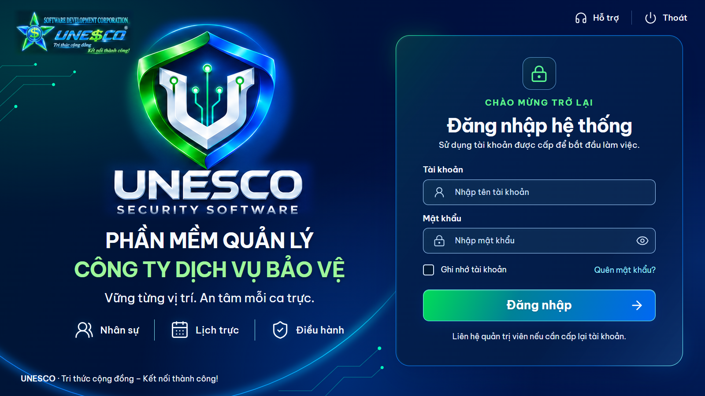
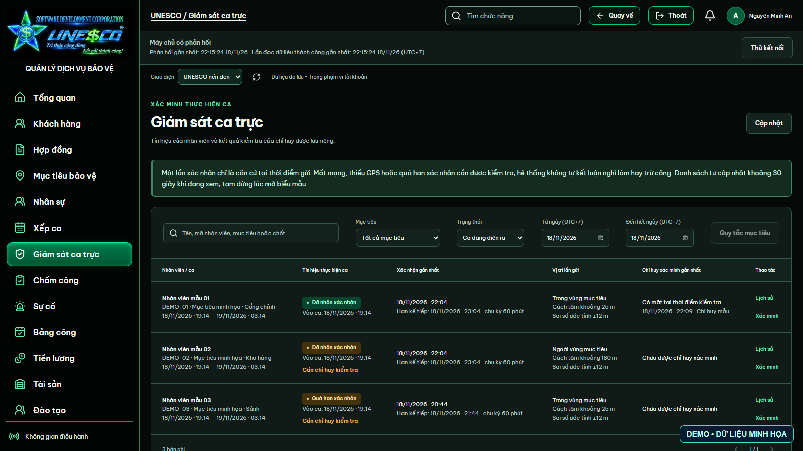

Phân công có điều kiện
Kiểm tra ca trùng, nghỉ đã duyệt, hiệu lực hợp đồng, chứng nhận đã xác minh và SOP bắt buộc khi công bố lịch.
Phần mềm quản lý công ty dịch vụ bảo vệ: kết nối nhân sự, lịch trực, xác nhận tại mục tiêu và đối soát công trên một quy trình có căn cứ.

Video có lời dẫn và phụ đề tiếng Việt. Chọn chương để đến phần bạn quan tâm.
Dữ liệu trong video, ảnh và ví dụ là dữ liệu minh họa. Không phải số liệu khách hàng, hiệu quả thực tế hay cam kết năng lực tải. Tải MP4 · Đọc lời dẫn
Chọn mốc thời gian để xem phần tương ứng. Lời dẫn dùng giọng đọc tổng hợp tiếng Việt.
UNESCO Security Software. Phần mềm quản lý công ty dịch vụ bảo vệ, kết nối nhân sự, lịch trực và xác minh tại mục tiêu. Cùng khám phá quy trình làm việc qua dữ liệu minh họa.
Đăng nhập bằng tài khoản do quản trị viên cấp. Chín vai trò hỗ trợ phân chia công việc. Chỉ huy xem mục tiêu được giao; nhân viên xem lịch, chấm công và phiếu lương của chính mình.
Từ phân hệ Nhân sự, tra cứu hồ sơ, tuyển dụng và điều kiện bố trí. Ví dụ giao diện có chín mươi sáu nhân sự minh họa. Hồ sơ được kiểm tra trước khi đưa người vào lịch trực.
Theo dõi quy trình nghiệp vụ theo từng phiên bản. Trong ví dụ, mười tám trên hai mươi bốn người đã xác nhận đọc, tương đương bảy mươi lăm phần trăm. Kết quả học và bước xác minh chứng nhận được quản lý riêng.
Ma trận xếp ca cho thấy mười sáu trong mười tám suất đã bố trí, còn thiếu hai suất. Trước khi công bố, hệ thống kiểm tra quân số, ca trùng và các điều kiện đã cấu hình. Số suất trực không phải số người duy nhất.
Nhân viên mở Lịch của tôi, ghi nhận vào ca rồi xác nhận đang trực. Vị trí chỉ được lấy khi bấm nút. Nếu không lấy được GPS, nhân viên ghi rõ lý do để chỉ huy đối chiếu. Đây là thao tác minh họa trên dữ liệu mẫu.
Chỉ huy mở Giám sát ca trực để xem xác nhận, thời điểm và sai số vị trí. Ngoài vùng hoặc quá hạn là dấu hiệu cần kiểm tra. Đăng nhập hay có kết nối mạng không chứng minh đang làm việc. Kết quả xác minh được ghi riêng, không tự trừ công.
Ví dụ một cặp vào ra có năm trăm bốn mươi phút quan sát. Hệ thống tách bốn trăm tám mươi phút trong ca và sáu mươi phút ngoài kế hoạch cần xác minh. Phần ngoài kế hoạch chưa tự chuyển thành giờ làm thêm hoặc tiền lương.
Bảng công được tổng hợp, kiểm tra, duyệt và khóa trước khi tính lương. Người lập không tự duyệt hồ sơ cần kiểm soát hai người. Điều chỉnh sau khóa đi sang kỳ sau, giữ lại lịch sử và căn cứ của kỳ gốc.
Một giả định để tự đánh giá: một trăm hai mươi bản ghi, mỗi bản từ ba phút đối soát xuống bốn mươi lăm giây, sẽ giảm bốn giờ rưỡi xử lý. Đây là phép tính minh họa, chưa phải hiệu quả được đo tại doanh nghiệp.
Bắt đầu với một mục tiêu và một kỳ công mẫu. Cấp quyền, lập lịch, xác minh rồi đối soát trước khi mở rộng. Xem video, tải hướng dẫn và khám phá các tính năng ngay trên trang giới thiệu UNESCO Security Software.
Kiểm tra ca trùng, nghỉ đã duyệt, hiệu lực hợp đồng, chứng nhận đã xác minh và SOP bắt buộc khi công bố lịch.
Tách tín hiệu nhân viên gửi, vị trí kèm sai số và kết luận kiểm tra của chỉ huy. Thiếu tín hiệu cần được đối chiếu thực tế.
Sự kiện gốc, mã chống gửi trùng, bước duyệt khác người, khóa kỳ và điều chỉnh kỳ sau hỗ trợ truy lại nguồn số liệu.
Xem lịch đã công bố, đọc và xác nhận SOP, ghi nhận vào/ra, gửi xác nhận đang trực và xem phiếu lương đã khóa của mình.
9 vai trò cố định. Chỉ huy theo mục tiêu được giao, nhân viên theo hồ sơ cá nhân. Phạm vi được kiểm tra tại API.
Quản lý tài sản, đào tạo, sự cố, báo cáo và nhật ký cùng các phân hệ nhân sự, lịch, công và lương.
Đối chiếu hồ sơ, chứng nhận, SOP và điều kiện bố trí.
Lập lịch và kiểm tra điều kiện trước khi công bố.
Nhân viên chủ động gửi; chỉ huy đối chiếu tín hiệu và căn cứ.
Xử lý ngoại lệ, duyệt khác người và giữ lịch sử kỳ công/lương.

88,9% theo suất · Còn 2 suất trống.
Không phải tỷ lệ có mặt thực tế.
75% đã xác nhận đọc · Còn 6 người.
Không thay bước kiểm tra năng lực.
480 trong ca + 60 ngoài kế hoạch.
60 phút cần xác minh, chưa tự tính lương.
Thay số để lập phương án đánh giá. Thời gian trước/sau là giả định do bạn nhập, chưa phải kết quả đo hoặc cam kết của phần mềm.
Khi nhân viên làm việc tại nhiều mục tiêu và theo nhiều ca, người điều hành cần biết ai được phân công, còn thiếu vị trí nào và căn cứ nào cho thấy ca đang được thực hiện. UNESCO Security Software kết nối các thông tin đó trong một quy trình: hồ sơ nhân sự → bố trí lịch → xác nhận ca → chỉ huy kiểm tra → đối soát công và lương.
Đọc toàn bộ bài viết →
Những tình huống cần làm rõ khi đánh giá phần mềm cùng đội vận hành.
Xem các bước thực hành →Chưa đủ căn cứ. Cần đối chiếu lịch được giao, thời điểm vào/ra, lần gửi xác nhận, vị trí và kết quả kiểm tra của chỉ huy. Trạng thái trực tuyến chỉ là một tín hiệu.
Bản web hiện ghi nhận vị trí khi nhân viên chủ động gửi và cho phép truy cập GPS. Đây là vị trí tại lần gửi, kèm độ chính xác; chưa có theo dõi nền liên tục hoặc bảo đảm chống giả mạo.
Không. Chỉ huy cần kiểm tra sai số, thời gian, tình huống thực tế và căn cứ trước khi kết luận. Phần công ngoài kế hoạch cần được đối soát riêng; cảnh báo không tự trở thành kết quả chấm công.
Cần kết nối mạng để gửi và nhận phản hồi từ máy chủ. Khi chưa nhận phản hồi, kiểm tra trạng thái trước khi thao tác tiếp và báo chỉ huy theo quy trình của đơn vị. Hàng đợi offline và ứng dụng Flutter còn trong kế hoạch.
Trợ lý trong bản demo cung cấp nội dung hướng dẫn có sẵn. Chưa kết nối mô hình AI để tự phân tích hoặc ra quyết định vận hành.
Đây là phép tính giả định: 120 bản ghi × (3 − 0,75 phút) = 270 phút, tức 4,5 giờ và giảm 75%. Chưa phải kết quả đo tại khách hàng. Hãy thay số trong công cụ và đo lại bằng quy trình thực tế.
Soạn nội dung, lưu nháp, xem trước và để quản trị viên xuất bản. Mỗi bản gửi có lịch sử; phần mềm kiểm tra nội dung công khai trước khi báo đã hiển thị trên web.
Cấp đúng quyền, lập lịch, xác nhận và đối soát. Dùng bộ tài liệu để kiểm tra cùng đội vận hành trước khi mở rộng.
Bản web đã có các luồng nhân sự, lịch, xác minh, công/lương, tài sản, đào tạo và sự cố trong phạm vi kiểm tra cục bộ. Chưa nghiệm thu doanh nghiệp hoặc triển khai phần mềm vận hành qua Internet trong bộ demo này.
AI hiện là hướng dẫn có sẵn. GPS nền liên tục, chống giả mạo vị trí, Flutter/offline và CRM/báo giá/hóa đơn/công nợ đầy đủ còn trong kế hoạch. Triển khai thật cần HTTPS, cấu hình hạ tầng và kiểm tra tại mục tiêu.
Các chỉ số hiệu quả cần được đo trên dữ liệu và quy trình thực tế. Xác nhận GPS không thay cho kiểm tra hiện trường.